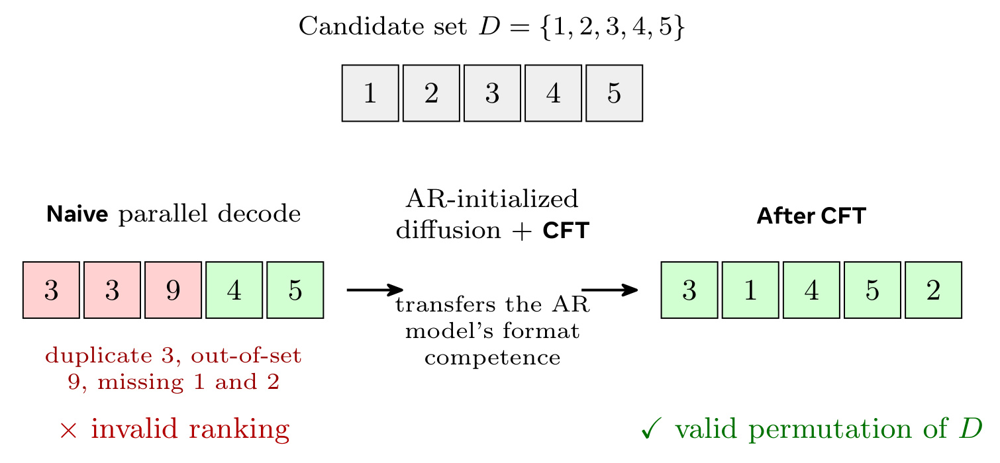
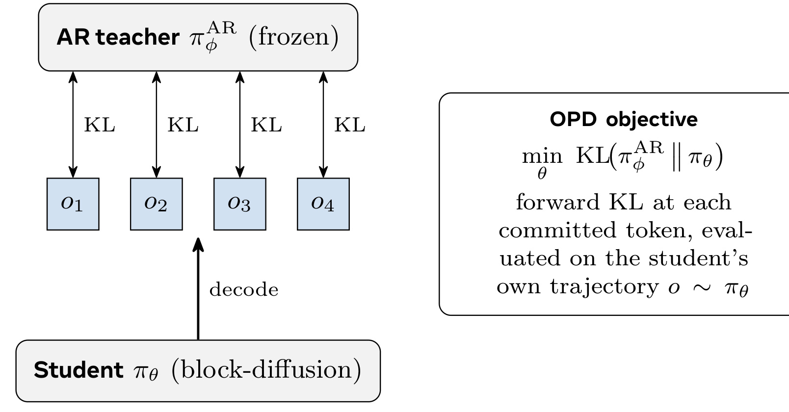
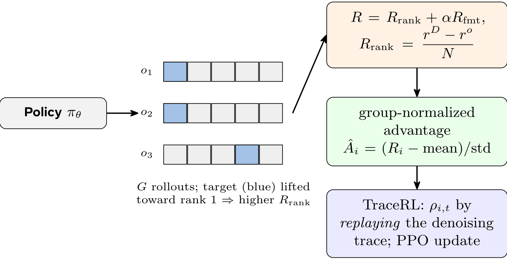
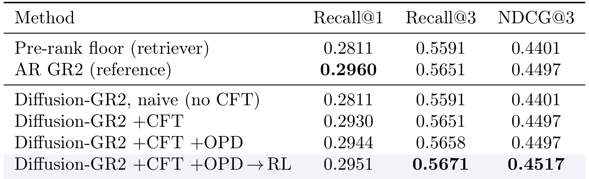
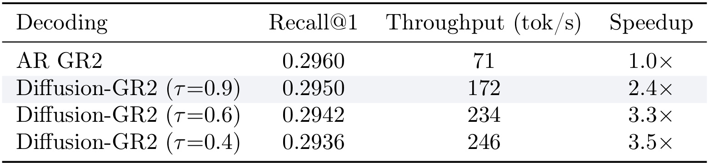
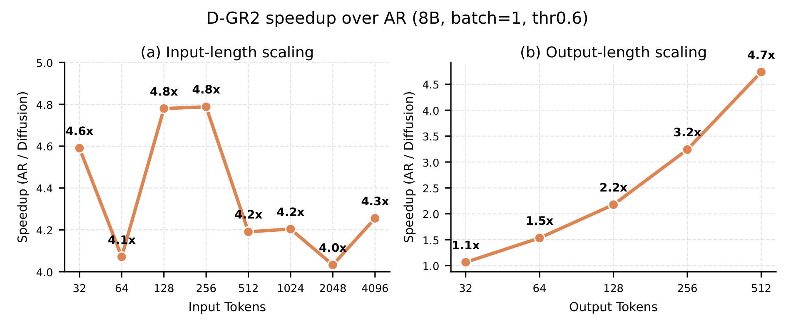
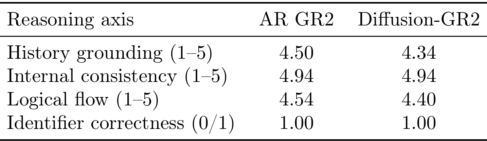
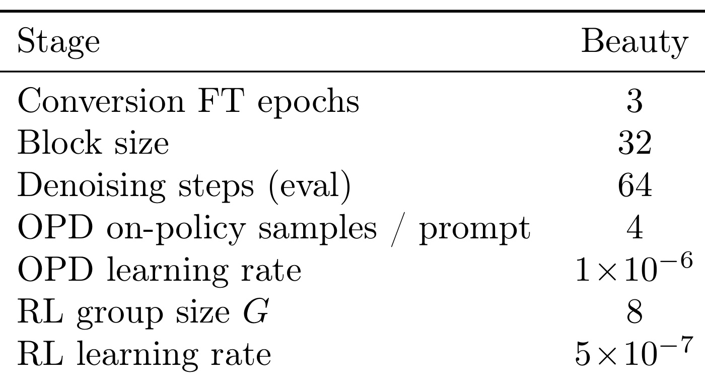

Diffusion-GR2：用块扩散语言模型加速生成式推理重排器
[toc]
这篇论文讨论的是推荐系统最后一段重排链路里的一个具体矛盾：生成式推理重排器能够读取用户历史和候选商品语义 ID，先生成一段解释性 reasoning，再输出候选集合的排序；这种做法比单个打分器更能利用商品语义和用户意图，但 AR 解码在服务时会被长推理文本拖慢。论文由 Meta AI 与 UNC Chapel Hill 合作完成，标题为 Diffusion-GR2: Diffusion Generative Reasoning Re-ranker，论文入口为 arXiv:2607.01170。本轮只核验到 arXiv 摘要页和 PDF，未在摘要或 PDF 首页看到独立代码仓库链接，因此代码状态记为未核验到独立链接。
生成式推理重排器可以通过链式推理提升推荐重排精度，但 AR 解码需要为每个 reasoning token 顺序前向一次；当 reasoning trace 明显长于最终排序结果时，生产重排场景的推理成本成为约束。朴素换成块扩散解码虽然能并行生成，却会同时引入无效排列的结构缺口和训练/推理分布不一致的残余精度缺口。
1. 背景和问题
推荐重排和传统检索、召回、粗排不同，它面对的是一个较短但已经经过上游筛选的候选列表。上游检索器给出若干候选商品，重排器要把真正可能成为下一次点击或购买的候选推到更靠前的位置。GR2 这一类生成式推理重排器不再只给每个候选打一个分，而是把用户购买历史、候选商品语义 ID、标题和类目信息放进 prompt，让语言模型先写出一段面向候选列表的推理，再输出一个候选 ID 排列。这个设计的优点很直接：模型可以显式比较用户历史中的偏好线索和候选商品语义，推理过程也更容易被人工审阅；缺点也同样直接：推理文本往往远长于最后十个候选 ID 的排序结果，而 AR 解码必须一个 token 一个 token 地顺序生成。
论文把这个问题放在生产重排语境下看，而不是只把它当作模型架构实验。重排模型在每次曝光前都可能被调用，长 prompt 已经包含用户历史和候选列表，真正可优化的服务瓶颈落在输出端的顺序解码。若一个 reasoning trace 有一百多个 token，AR 模型就需要大致同等数量的顺序前向；这和普通问答场景不同，因为重排最终只服务一个排序动作，服务系统并不会把完整 reasoning 展示给用户。换句话说，推理文本是模型内部获得精度的中间计算，却也是线上延迟和吞吐的主要负担。
块扩散语言模型看起来正好适合这个瓶颈。它不是从左到右生成，而是在一个块内把多个被 mask 的位置并行预测，再按置信度提交一批 token；如果多个位置能在同一步被确定，顺序前向次数就可以显著少于输出长度。论文采用 block-causal masked denoising 的原因也在这里：prompt 和已提交块仍可复用 KV cache，只在当前 active block 上反复 denoise。这比完全双向的 diffusion LM 更适合长 prompt、短答案或中等长度 reasoning 的重排服务，因为后者每一步都可能重新处理完整上下文，无法继承 AR serving 中最重要的 prefill amortization。
但问题并不是“把 AR decoder 替换成 diffusion decoder”这么简单。推荐重排的 answer span 不是自由文本，而是候选集合的一个排列。AR 解码一次只提交一个候选 ID，可以在下一步 mask 已经用过的 ID，所以天然不会输出重复候选、漏掉候选或给出候选集外 ID。扩散解码恰好相反：同一 denoising step 中多个 answer positions 独立打分并行提交，模型没有内置机制知道“这个候选已经被另一个位置使用过”。这就是论文所说的 structural gap。它不是语法小错误，而会直接让排序无效；若系统把无效输出回退到原始 retriever 顺序，重排增益就会被抹掉。
第二个问题是 distributional gap。即使通过 fine-tuning 让扩散模型学会大多数合法格式，如果训练只看固定 teacher trajectories，推理时模型仍然在自己的 denoising order、部分生成上下文和提交历史上运行。它训练时看到的是 teacher reasoning trace 和 ground-truth answer，推理时看到的是自己前几步并行提交后的上下文；这个偏差会像 exposure bias 一样沿 trajectory 累积。论文因此把目标拆成两件事：先把 AR GR2 转成能够输出合法排列的 block-diffusion re-ranker，再用 on-policy distillation 和 RL 把它拉回 AR teacher 附近，同时保留并行解码带来的吞吐收益。
这个问题值得看，是因为它和推荐系统中的 LLM 重排落地非常贴近。许多 LLM4Rec 工作证明 reasoning、语义 ID、候选比较可以带来效果，但线上系统最终要面对延迟、吞吐、候选格式约束和错误回退。Diffusion-GR2 的贡献不是提出新的推荐任务，也不是把数据集换大，而是把“推理带来的精度”和“推理带来的服务成本”放到同一个转换配方里处理。对工程团队来说，这类论文的核心价值在于：如果已经训练了一个高质量 AR reasoning reranker，能否用较少的结构改动把它变成更快的模型，而不是重新训练一个完全不同的排序器。
2. 方法
2.1 重排任务和块扩散解码器
论文沿用 GR2 的重排形式。一个样本包含用户历史 $H=(s_{v_1},\ldots,s_{v_k})$，以及 retriever 给出的预排序候选列表 $D=(s_{y_1},\ldots,s_{y_N})$。每个商品用 semantic identifier 表示，文中固定 $N=10$。重排器不是直接输出分数，而是定义为条件分布：
符号解释：$P(H,D)$ 是把用户历史和候选集合渲染成 chat prompt 后的输入；$o$ 是模型输出，包含推理轨迹 $\tau$ 和最终答案 $a$；$r_i$ 是 reasoning trace 中的 token 或片段；$a_i$ 是第 $i$ 个排序位置上的候选 ID。关键约束是 $a$ 必须是候选集合 $D$ 的一个排列，而不是任意 JSON 列表。这个约束把重排任务和普通自由文本生成区分开，也解释了为什么 diffusion 的并行提交会带来结构风险。
块扩散部分可以用原文公式 (1) 来理解。模型从一个被 mask 的 answer canvas 开始，在第 $s$ 个 denoising step 中为每个仍被 mask 的位置预测词表分布，再由提交规则 $C$ 决定哪些位置固定下来：
符号解释：$x^{(s)}$ 是第 $s$ 步后的部分去噪状态；$p_\theta(\cdot\mid x^{(s)},P)$ 是模型对每个未确定位置的 token 分布；$C$ 是基于 top-token probability threshold $\tau$ 的提交规则；被提交的位置进入 clean context，未达到阈值的位置重新 mask，等待后续步骤。若同一步能提交多个 token，生成长度为 $L$ 的输出就不必付出 $L$ 次顺序前向。论文使用 block size $B=32$，块内双向、块间因果，因此 prompt 和前序已提交块可以缓存，当前块内再做并行 denoising。
Diffusion-GR2 的核心机制不是让推荐任务变成纯扩散生成，而是在保留 GR2 prompt、semantic ID 和重排接口的前提下，只把最耗时的 AR 输出过程换成 block-parallel denoising。这样做使它可以继承已有 AR GR2 的能力，也让对比更公平：AR reference、converted diffusion model、CFT、OPD 和 RL 都共享 Qwen3-8B backbone 和相同重排任务，差别主要来自解码方式与转换训练。
2.2 CFT：把 AR 的合法排列能力迁移进扩散解码器
朴素转换失败的根因在 answer span。reasoning span 是自由文本，并行提交几个词通常只会影响局部表达；answer span 是排列，任何位置的候选选择都会影响其他位置是否还能使用同一候选。论文列出三种错误：重复候选、遗漏候选、候选集外 ID。AR decoder 因为从左到右提交，可以在每步 mask 已经出现过的候选；diffusion decoder 同步预测多个 answer positions，无法天然维护“已经使用”的集合。因此 naive converted model 在实验证据里几乎退回到 pre-rank floor。

这张图把结构缺口画得很清楚：候选集合是 $D=\{1,2,3,4,5\}$，朴素并行解码给出 $3,3,9,4,5$，其中有重复的 3、候选集外的 9，并且漏掉 1 和 2；CFT 后则输出 $3,1,4,5,2$，成为候选集合内的合法排列。这里的重点不是 CFT 额外加了一个规则解码器，而是扩散模型从 AR GR2 初始化，已经带有“重排答案应如何组织”的格式能力，fine-tuning 让这种能力适应 masked-diffusion objective。对线上系统来说，这比外部 constrained decoder 更干净：如果模型自身能学会合法排列，服务端不必在每个 denoising step 外围维护复杂约束；但风险是模型仍可能在分布外候选、长尾 SID 或低置信阈值下出错，所以后文实验还必须报告 valid JSON 和 reasoning quality，而不能只报告 Recall。
CFT 的训练目标沿用 GR2 中 reasoning 和 answer token 解耦的思想，但把生成机制换成 masked diffusion。它的输入仍是 AR re-ranker 的权重，输出则是一个能够在 parallel decoding 下 denoise assistant message 的模型。论文强调，CFT 恢复的是“format competence”和大部分转换精度，而不是最终全部性能。也就是说，CFT 解决了最明显的 structural gap，但它在训练中仍主要面对固定轨迹；当模型推理时沿着自己的 denoising path 走，它还会遇到没有在 teacher forcing 中见过的局部上下文。
2.3 OPD：在学生自己的轨迹上蒸馏 AR 教师
CFT 之后仍然存在 residual gap，原因是训练和推理分布不一致。论文的处理方式是 on-policy distillation：先让 converted diffusion student 按真实推理时的 block-diffusion decoding 分布生成轨迹，再让冻结的 AR teacher 在这些学生轨迹对应的上下文上提供 dense per-token target。这样监督信号不是来自固定 teacher trace，而是来自学生自己已经走到的位置。
符号解释：$P\sim D$ 表示从训练 prompt 分布中采样；$o\sim\pi_\theta(\cdot\mid P)$ 是 diffusion student 自己生成的轨迹；$o_{<t}$ 是该轨迹在位置 $t$ 之前的上下文；$\pi^{\mathrm{AR}}_\phi$ 是冻结的 AR GR2 teacher；$\mathrm{KL}(\cdot\|\cdot)$ 让学生在自己的上下文上贴近 teacher 的 next-token 分布。这个目标的直觉是：如果学生已经偏离了 teacher 轨迹，继续拿原始 teacher trace 监督并不能告诉它如何从偏离状态回来；在学生自己的状态上询问 teacher，才更接近推理时会遇到的错误恢复问题。

Figure 4 展示了 OPD 为什么被称为 on-policy。底部的 student $\pi_\theta$ 先 decode 出 $o_1,o_2,o_3,o_4$，顶部冻结的 AR teacher $\pi^{AR}_\phi$ 对这些已提交 token 位置给出 KL 目标，右侧 objective 明确是对学生自己 trajectory 上的 committed token 做 forward KL。图里没有 ground-truth fixed trace，因为论文真正想修的是 CFT 后的 train/inference mismatch。注意这里的 teacher 不是更强的通用 LLM，而是已经经过 SFT+RL 的 AR GR2 reference；OPD 的目标是把扩散学生拉回这个重排专用 teacher 的行为附近。它提供的 dense token supervision 比单个 ranking reward 更稳定，也为后续 RL 提供了不太退化的起点。
OPD 还暗含一个可扩展方向：如果把 teacher 换成更高计算量、更多 denoising steps 或更高阈值的同一个 diffusion model，就可以把慢而准的 diffusion policy 蒸馏到快 policy 上。论文没有把这个变体作为主结果，但它提示 Diffusion-GR2 不只是一次 AR-to-diffusion 转换，也可以变成一条速度-精度前沿上的自蒸馏路径。
2.4 RL：用可验证重排奖励补最后的精度缺口
最后一阶段是直接优化重排指标。论文复用 GR2 的可验证奖励：如果重排后 ground-truth target 在列表中的 rank 更靠前，就给 rank-promotion reward；再加一个 conditional format reward，只有真正改善目标排名，或原本 top-1 且保持 top-1 时才奖励格式，避免模型为了拿格式奖励而输出不改变排序的保守结果。
符号解释：$s_{v_{n+1}}$ 是下一个真实目标商品；$r_D$ 是该目标在 retriever 原始候选列表中的 rank；$r_o$ 是重排输出中的 rank；$N$ 是候选数量。若重排把目标从更靠后的位置提升到更靠前的位置，分子为正，奖励变大；若没有提升或输出无效，奖励就没有帮助。这个奖励的优势是可计算、无需人工偏好模型，适合推荐重排这种有明确 next-item target 的任务。
论文的 RL objective 使用 GRPO/DAPO 风格的 group update，并借鉴 TraceRL 思路重放 denoising trace 来计算 importance ratio：
符号解释：$G$ 是每个 prompt 采样的轨迹组大小；$\rho_{i,t}(\theta)$ 是第 $i$ 条轨迹在位置 $t$ 的 importance ratio，论文通过重放该位置被提交时的 denoising canvas 来计算；$\hat A_{i,t}$ 是由组内 reward 标准化得到的 advantage；$\epsilon$ 是 PPO-style clipping 范围。这个写法说明 Diffusion-GR2 的 RL 不是把整条 diffusion output 当成一个黑盒序列打分后粗暴更新，而是尽量在推理实际发生的 committed positions 上计算概率比。

Figure 5 对应这一阶段的训练流程：policy 为同一个 prompt 采样 $G$ 条 rollouts，蓝色目标在排序中越靠前，$R_{rank}$ 越高；reward 再和 conditional format reward 组合，转成 group-normalized advantage；最后通过 replay denoising trace 得到每个 committed token 的 $\rho_{i,t}$，进入 PPO update。图里最值得注意的是 RL 被放在 OPD 之后，而不是直接从 naive 或 CFT 模型冷启动。原因是推荐重排 reward 很稀疏且受格式影响，如果 policy 尚未稳定输出合法排列，RL 会频繁面对 invalid rollout 或零方差组；OPD 先把策略拉到健康 on-distribution 区间，再让 reward 优化最后的 top-rank margin。这也解释了为什么论文的最终 recipe 写成 OPD -> RL，而不是 CFT 后直接上 RL。
3. 实验结果
3.1 实验设置：Beauty、候选集和评价指标
实验只在 Amazon Review Beauty 上做，口径比较集中。数据按 TIGER protocol 做 5-core filtering、按时间切分 train/validation/test，每个商品编码成 4-token RQ-VAE semantic identifier。每个用户由 retriever 先返回 top-10 candidates，重排器只负责重新排列这十个候选，目标是把真实下一件商品推到更靠前的位置。论文中的 Table 1 没有作为图片保留，因为对象高度过小且紧贴前一张图的 caption；数值是 22,363 users、12,101 items、平均序列长度 8.87，测试集正文给出 $n=1,615$ users。
指标包括 Recall@1、Recall@3 和 NDCG@3。因为每个测试样本只有一个 relevant item，NDCG@3 的解释比较直观：目标商品越靠前折扣越小。效率部分报告 decode throughput，即 reasoning output length 约 130 tokens 时每秒生成 token 数；硬件口径是 single H100-80G，并使用 torch.compile。所有系统共享 Qwen3-8B backbone，对比对象包括 pre-rank floor、AR GR2 reference、naive converted diffusion model、+CFT、+OPD 和 +OPD -> RL。
这个设置有一个重要边界：论文证明的是“在 Beauty top-10 重排和 GR2 设定下，块扩散转换可以接近 AR 精度并提升 decode throughput”，不是证明所有推荐重排或所有商品域都能直接迁移。Beauty 平均序列长度只有 8.87，候选数固定为 10，目标商品唯一；如果线上候选更多、用户历史更长、候选 ID 体系更复杂，answer validity 和 off-policy gap 可能会放大。因此实验结果最好被读作 conversion recipe 的第一组证据，而不是通用生产 SLA。
3.2 主结果：从 naive 到 CFT、OPD、RL 的精度恢复

Table 2 是论文最关键的结果。pre-rank floor 的 Recall@1 是 0.2811，AR GR2 reference 是 0.2960；这意味着整个重排器能争取的 top-1 增益只有 0.0149，空间并不大。naive diffusion 没有 CFT 时完全回到 0.2811，说明朴素并行解码产生的无效或保守输出让重排增益消失。+CFT 后 Recall@1 到 0.2930，已经拿回大部分 conversion gap；+OPD 到 0.2944，离 AR reference 只差 0.0016；最后 +OPD -> RL 到 0.2951，基本贴近 teacher。更有意思的是 Recall@3 和 NDCG@3：CFT 后已经匹配 AR 的 0.5651 和 0.4497，OPD 与 RL 进一步把 Recall@3 提到 0.5671、NDCG@3 提到 0.4517。这说明 RL 不只是补 top-1，还可能在 top-3 内重新分配候选顺序，使 broader ranking quality 略高于 teacher。
从证据链看，CFT 是最大贡献阶段。它解决的是“能否输出合法排列”这个硬门槛，所以从 naive 到 +CFT 的跃迁最大。OPD 的增量较小但很关键，因为它证明 residual gap 不是靠更多 off-policy fine-tuning 解决，而是需要让学生暴露在自己的 decoding distribution 上。RL 的增量最小，却把结果推到论文需要的 near-parity 区间。这里不能夸张成 diffusion 超越 AR：Recall@1 仍略低于 AR reference，且绝对差距在小数点后三位；论文更稳妥的结论是，Diffusion-GR2 用多阶段转换把 AR reasoning reranker 的精度损失压到很小，并在部分 top-3 指标上略好。
3.3 吞吐与速度-精度边界

Table 3 把吞吐收益放到同一个精度表里。AR GR2 的 throughput 是 71 tok/s，Diffusion-GR2 在 $\tau=0.9$ 时 Recall@1 为 0.2950，吞吐 172 tok/s，即 2.4 倍；$\tau=0.6$ 时 Recall@1 为 0.2942，吞吐 234 tok/s，即 3.3 倍；$\tau=0.4$ 时吞吐 246 tok/s，速度 3.5 倍，但 Recall@1 进一步下降到 0.2936。这个表说明阈值 $\tau$ 是服务策略开关：更高阈值更接近 AR 质量，但并行提交更保守；更低阈值更快，但 parsing 和 ranking quality 风险变大。论文摘要中“2.4-3.5x decode throughput”正是来自这里，而不是来自端到端系统吞吐或全链路延迟。

Figure 6 解释了速度收益来自哪里。左图固定 output length 为 512，扫描 input tokens，从 32 到 4096 的 speedup 大致维持在 4 倍上下，没有随输入长度显著增加；右图固定 input 约 2400，扫描 output tokens，从 32 到 512 时 speedup 从 1.1x 增长到 4.7x。这个模式符合论文的机制判断：block diffusion 的主要优势在输出端并行提交，尤其适合 reasoning trace 长的场景；它不是因为 prompt 处理更便宜，因为 block-causal 设计只是复用 AR 式 KV cache，避免每步重算长 prompt。对推荐重排来说，这个结果很重要：如果 reasoning output 只有几十个 token，扩散优势有限；如果为了精度需要更长 reasoning，AR 的顺序成本会线性增长，而 Diffusion-GR2 的收益更明显。工程上这意味着它更适合“需要解释性推理但只服务排序”的高价值重排阶段，而不一定适合所有短文本排序器。
速度结果也有两个限制。第一，论文报告的是 decode throughput，不是完整线上 p99 latency；prompt 构造、retriever、候选特征读取、batching、失败回退都不在表里。第二，单请求 batch=1 与 H100-80G 的口径不能直接外推到多租户服务。尽管如此，Table 3 与 Figure 6 至少证明了算法层面的 sequential forward passes 确实减少，而且输出越长越占优势，这和方法章的 block-parallel denoising 逻辑一致。
3.4 推理质量：不是只靠格式恢复

Table 4 回答一个容易被忽略的问题：Diffusion-GR2 是否只是输出了看起来合法的排序，但 reasoning trace 质量明显退化？论文用 50 个 paired blind evaluations 做 LLM-as-judge，三个 1-5 维度分别是 history grounding、internal consistency、logical flow，另有 identifier correctness 的 0/1 检查。AR GR2 在 history grounding 上是 4.50，Diffusion-GR2 是 4.34；internal consistency 两者都是 4.94；logical flow 是 4.54 对 4.40；identifier correctness 都是 1.00。正文还给出 pairwise preference 为 AR 17、Diffusion-GR2 9、tie 24，parse rate 100%，没有 history/candidate identifier confusion。这个结果不能证明 Diffusion-GR2 的解释完全等价于 AR，但能说明它没有出现系统性 filler 化或 ID 混淆。
这部分对推荐系统落地很有价值，因为 reasoning reranker 的可用性不仅取决于最终 Recall。如果生成推理中出现候选 ID 混乱、把用户历史和候选集合搞反、或逻辑前后矛盾，即便排序偶尔正确，也会削弱人工审阅和后续蒸馏价值。Table 4 的证据表明，多阶段转换至少在 Beauty 小规模盲评上保持了 reasoning trace 的基本质量。不过样本只有 50 对，judge 本身也可能偏向更流畅文本；如果要用于生产，仍应加入真实用户分群、长尾类目、候选相似度很高的 case study，以及人工标注的 failure taxonomy。
3.5 复现与超参数边界

Table 5 给出转换流程的关键配置：CFT 训练 3 个 epoch，block size 为 32，eval denoising steps 为 64，OPD 每个 prompt 采样 4 条 on-policy trajectories，OPD learning rate 为 $1\times10^{-6}$，RL group size $G=8$，RL learning rate 为 $5\times10^{-7}$。这些数值说明 Diffusion-GR2 不是零成本替换 decoder；它需要 CFT、OPD 和 RL 三段后训练，并且每段都有稳定性假设。特别是 OPD 要计算 AR teacher logits 并缓存，RL 要采样 group rollouts 和 replay denoising trace，这些训练成本没有出现在服务端 throughput 表里。
复现风险主要有三类。第一，AR teacher 本身必须足够强；如果原始 GR2 没有学好 semantic-ID reasoning 或 rank-promotion reward，扩散转换只能继承弱 teacher。第二，candidate ID 的合法排列约束在 $N=10$ 时相对简单，候选数增大后 CFT 是否仍能不靠 constrained decoder 保持 validity，需要额外验证。第三，阈值 $\tau$ 与 block size 共同决定速度-精度边界，论文只报告 Beauty 上的几个点；不同商品域、不同平均输出长度、不同 GPU 和 batching 策略下，最优服务点可能不同。
综合实验看，论文最有说服力的部分是阶段性 ablation：naive 回到 floor，CFT 大幅恢复，OPD 缩小 residual gap，RL 补最后 margin；速度部分则用 Table 3 和 Figure 6 把吞吐收益和 output length 联系起来。相对不足的是数据集单一、规模较小、没有线上 A/B 或真实服务延迟，且代码链接未核验到独立仓库。作为研究原型，它已经清楚展示了 AR-to-diffusion conversion 在 reasoning reranker 上的可行性；作为生产方案，还需要更大域、更复杂候选集合和更完整 serving benchmark。
4. 总结
4.1 我的判断
Diffusion-GR2 最值得关注的地方，是它没有把“推荐重排”和“扩散语言模型”粗暴拼接，而是抓住了 reasoning reranker 的两个实际约束：输出 reasoning 很长，最终 answer 又必须是候选集合排列。CFT、OPD、RL 三段看起来复杂，但各自对应一个明确缺口：CFT 解决合法排列，OPD 修训练/推理分布差异，RL 对齐最终 rank-promotion reward。这个结构比单纯报告“扩散解码更快”更有工程意义，因为重排系统不能只追求吞吐，还要保证输出可解析、候选 ID 不混淆、排序指标不掉太多。
4.2 工程启发与复现建议
如果要把这条思路迁移到真实推荐链路，我会先选一个已有 AR reasoning reranker 作为 teacher，而不是从零训练 diffusion model。第一步复现 Table 2 的阶段性 ablation，确认 naive、CFT、OPD、RL 的边际贡献是否仍存在；第二步复现 Table 3 的 $\tau$ 扫描，找到业务能接受的 Recall 损失与吞吐增益；第三步加上严格格式监控，单独统计 duplicated candidates、missing candidates、out-of-set IDs、JSON parse failures 和 fallback-to-retriever 比例。只有这些指标都稳定，Diffusion-GR2 才能进入 shadow traffic。
4.3 局限和后续跟进
局限至少有四点。第一，实验只覆盖 Amazon Beauty，一个平均序列较短、候选数固定为 10 的公开数据集，不能代表多类目、多意图和高相似候选的线上重排。第二，论文报告 decode throughput 而不是端到端 p99 latency，实际服务还要考虑 prompt 构造、batching、GPU 利用率和失败回退。第三，代码未核验到独立链接，复现 CFT/OPD/RL 的工程细节仍要从 PDF 推断。第四，reasoning quality 只做 50 对 blind judge，样本量不足以覆盖长尾错误。第五，CFT 不使用外部 constrained decoder 是优点也是风险；一旦业务候选 ID 空间更复杂，模型自身合法性可能不够稳定。
后续跟进建议有三条。第一，关注是否发布代码或更完整的训练配置，尤其是 denoising trace replay 和 OPD teacher logits cache 的实现。第二，把候选数从 10 扩到 50 或 100，测试合法排列能力是否随 answer span 增长而退化。第三，在含有更长 reasoning trace 的推荐或搜索重排任务上复现 Figure 6 的输出长度收益，确认 2.4-3.5x 是否能转化为端到端服务收益。第四，增加人工错误分析，区分排序错、推理错、ID 错和格式错，避免只用 Recall 掩盖 reasoning reranker 的真实失败模式。